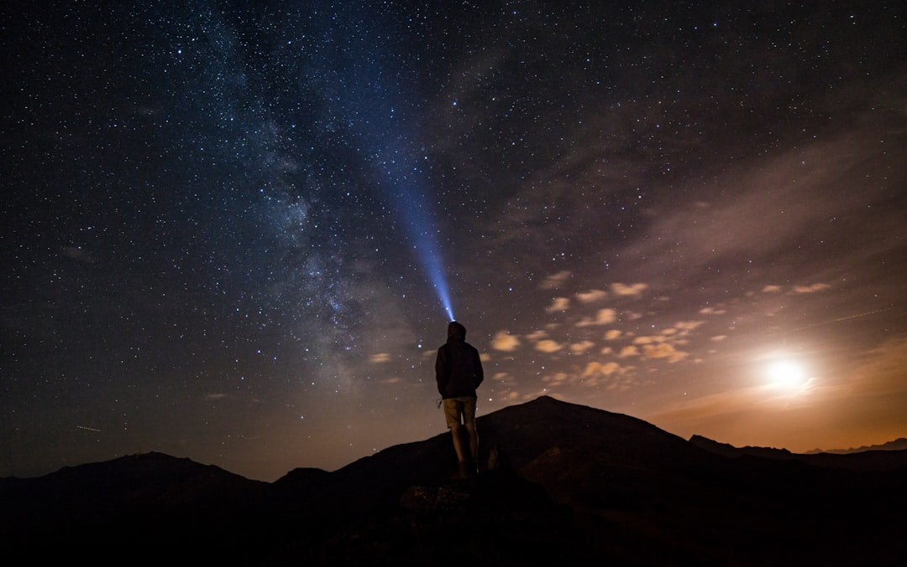

# The Great UFO Disclosure: The Truth Beyond the Veil
# The Great UFO Disclosure: The Truth Beyond the Veil In the over-hyped theater of the American political landscape, where the elite play their games and the working class reels under the weight of a crumbling socio-economic structure, there lies a truth that has the potential to shake the very foundations of our reality. UFOs, a topic that once lived solely in the realm of conspiracy theories and Hollywood blockbusters, is now at the forefront of serious governmental discourse, revealing how the power dynamics around knowledge and secrecy operate. And make no mistake—this is not just about the skies; it's about the mechanisms of power and control that have historically marginalized the truth in favor of the elite. ### A Shift in the Narrative Since the emergence of the so-called "UFO Disclosure Movement," conversations around unidentified aerial phenomena (UAP) have opened a Pandora's box. In recent years, videos captured by Navy pilots that show bizarre aerial objects darting and zig-zagging in ways that defy the laws of physics have kicked off a media frenzy. What was once treated as a fringe topic has become a legitimate concern for federal agencies, which are now compelled to address these sightings. The Pentagon has even established a task force to investigate these incidents. This is a monumental shift that signals something much deeper—our government is beginning to peel back the layers of secrecy that have shrouded not just UFOs, but the very nature of power that governs us in ways we barely understand. ### Economically Disenfranchised, Psychologically Dominated But why should you care? You might dismiss this phenomenon as mere spectacle or foolishness, a distraction from more pressing issues like wage stagnation, healthcare, and systemic racism. And therein lies the insidious nature of the ruling class—they skillfully manipulate narratives to keep the masses carefully preoccupied with sensationalism while the gears of capitalism grind us into dust. UFOs are more than just objects in the sky; they represent the unanswerable questions we’re all afraid to ask. Who controls the agencies that study these phenomena? Who gets to classify information as needing to be kept secret? The ongoing lack of accountability in our military-industrial complex only heightens our need for transparency. When will we hold the powerful accountable? When will we fight back against a system that thrives on ignorance and oppression? ### The Corporate Media Circus While the mainstream media has latched onto the UFO phenomenon as a fresh narrative, it’s essential to scrutinize who benefits from this frenzy. Corporate media outlets, beholden to advertisers and their corporate overlords, spin tales of wonder, but they fail to link this phenomenon with the everyday struggles of the working class. Instead of interrogating why the public has been deprived of the truth for decades, they regurgitate the same tired tropes, framing prime opportunities for genuine inquiry as mere entertainment. Think about it—the average American is inundated with messages about extraterrestrial life, while real earthly issues like climate change, income inequality, and systemic racism go largely unaddressed. Every second you spend captivated by the latest UFO sighting is a second taken from grappling with the state of healthcare or the onslaught of corporate gentrification. If you’re mesmerized by lights in the sky, you might forget that those same lights are part of a military surveillance apparatus that watches citizens while neglecting their most basic needs. ### Capitalism and Secrecy: An Indelible Link Moreover, UFO secrecy serves a profound purpose within the framework of capitalism. Secrecy is a tool used to consolidate power among the elite and frighten the disenfranchised into submission. The longer we accept the opaque machinery of government without demanding clear insights, the tighter the grip of this control becomes. Since the Roswell incident, every subsequent cover-up about extraterrestrial contact symbolizes not just technology lost to the public, but our collective ability to question governance, demanding accountability and social equity. ### The Path Forward So, what does this all mean for the radical left? This moment presents a unique opportunity for grassroots movements to educate and mobilize. Transforming UFO disclosure into a rallying cry against the corporate state should be our aim. People need to be disrupted from their passive acceptance of official narratives; they must be ready to organize, pushing for transparency not just around UFOs, but across
Updated 2025-08-03 06:54 UTC